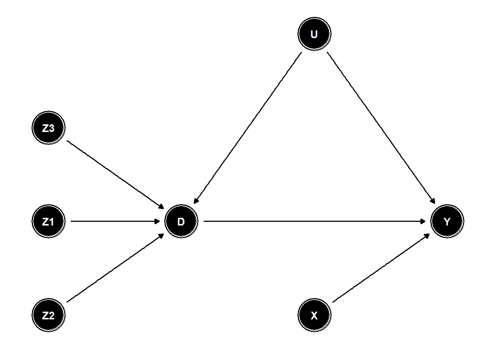
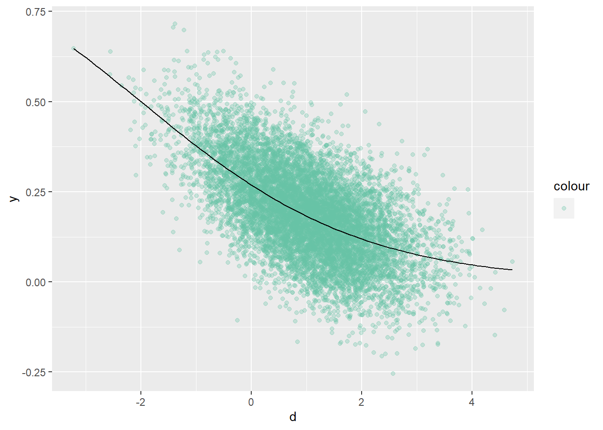
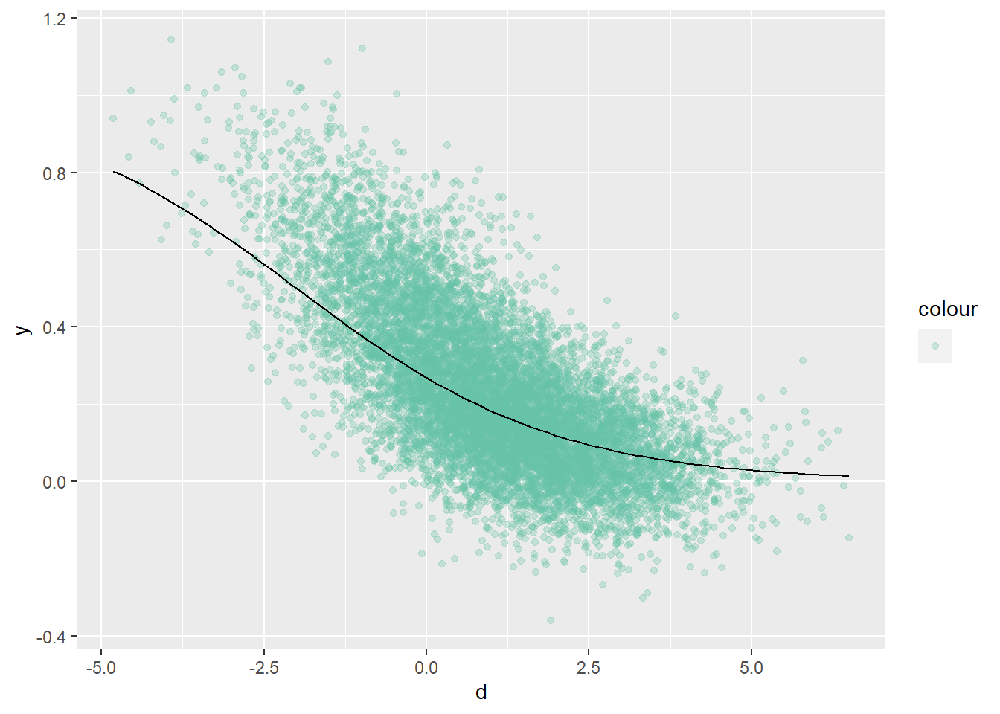

chapter: 4 Methods
ここではGMMについて見ていく。
library(tidyverse)
library(ggdag)##
## 次のパッケージを付け加えます: 'ggdag'## 以下のオブジェクトは 'package:stats' からマスクされています:
##
## filterlibrary(dagitty)4.1 2SLS
4.1.1 Setting
- 内生変数一つに対して操作変数が例えば3つある時に、それを全部使って効率的に推定できる。
tidy_dag_2 <- ggdag::dagify(
Y ~ D + X + U,
D ~ U+Z1+Z2+Z3,
exposure = "D", # 処置変数（暴露 [exposure]） を指定
outcome = "Y" , # 結果変数を指定
latent = "U", # 未観測（潜在[latent]）変数を指定
coords = list(x = c(Z3 = 0, X=2, Z2 = 0, D = 1, Y = 3, U = 2,Z1=0),
y = c(Z3 = 0.5,X=-0.5,Z2 = -0.5, D = 0, Y = 0, U = 1,Z1=0))
) %>%
ggdag::tidy_dagitty()
ggdag::ggdag(tidy_dag_2,stylized = TRUE) + ggdag::theme_dag_blank()
4.1.2 DGP
DGPは以下の通りとする。
u<-rnorm(10000)
z1<-rnorm(10000)
z2<-rnorm(10000)
z3<-rnorm(10000)
x<-1+rnorm(10000)
d<-1+3*u+0.5*z1+0.7*z2+z3+rnorm(10000)
y<-0.5*d+2*x+0.8*u+rnorm(10000)
dt<-tibble(u,x,z1,z2,z3,d,y)4.1.3 パッケージを用いた推定
パッケージestimatrを使った推定は以下。
lm(y~d,data=dt) %>%summary #biased##
## Call:
## lm(formula = y ~ d, data = dt)
##
## Residuals:
## Min 1Q Median 3Q Max
## -8.178 -1.558 -0.030 1.548 8.061
##
## Coefficients:
## Estimate Std. Error t value Pr(>|t|)
## (Intercept) 1.81724 0.02369 76.7 <2e-16 ***
## d 0.69658 0.00664 104.9 <2e-16 ***
## ---
## Signif. codes: 0 '***' 0.001 '**' 0.01 '*' 0.05 '.' 0.1 ' ' 1
##
## Residual standard error: 2.271 on 9998 degrees of freedom
## Multiple R-squared: 0.524, Adjusted R-squared: 0.524
## F-statistic: 1.101e+04 on 1 and 9998 DF, p-value: < 2.2e-16lm(y~d+z1,data=dt) %>%summary #biased##
## Call:
## lm(formula = y ~ d + z1, data = dt)
##
## Residuals:
## Min 1Q Median 3Q Max
## -8.2590 -1.5554 -0.0269 1.5465 8.1234
##
## Coefficients:
## Estimate Std. Error t value Pr(>|t|)
## (Intercept) 1.812320 0.023701 76.465 < 2e-16 ***
## d 0.700777 0.006708 104.465 < 2e-16 ***
## z1 -0.096729 0.022928 -4.219 2.48e-05 ***
## ---
## Signif. codes: 0 '***' 0.001 '**' 0.01 '*' 0.05 '.' 0.1 ' ' 1
##
## Residual standard error: 2.269 on 9997 degrees of freedom
## Multiple R-squared: 0.5249, Adjusted R-squared: 0.5248
## F-statistic: 5521 on 2 and 9997 DF, p-value: < 2.2e-16#install.packages("estimatr")
library(estimatr)
iv_robust(y ~ d | z1+z2+z3, data = dt,
se_type = "HC2") %>%summary##
## Call:
## iv_robust(formula = y ~ d | z1 + z2 + z3, data = dt, se_type = "HC2")
##
## Standard error type: HC2
##
## Coefficients:
## Estimate Std. Error t value Pr(>|t|) CI Lower CI Upper DF
## (Intercept) 2.0045 0.02967 67.56 0.000e+00 1.9463 2.0626 9998
## d 0.5126 0.01769 28.98 2.327e-177 0.4779 0.5472 9998
##
## Multiple R-squared: 0.4874 , Adjusted R-squared: 0.4874
## F-statistic: 839.7 on 1 and 9998 DF, p-value: < 2.2e-164.1.4 手計算で計算する場合
2SLSで推定する場合は以下。
\[ \boldsymbol{\hat{D}=Z(Z'Z)^{-1}Z'D}\\ \boldsymbol{\beta^{2SLS}=(\hat{D}'\hat{D})^{-1}\hat{D}'Y}\\ =\boldsymbol{(D'Z(Z'Z)^{-1}Z'D)^{-1} D'Z(Z'Z)^{-1}Z'Y}\\ =\boldsymbol{\beta+(D'Z(Z'Z)^{-1}Z'D)^{-1} D'Z(Z'Z)^{-1}Z'\epsilon} \]
d_m<-tibble(rep(1,10000),d) %>% as.matrix() # n*2
z_m<-tibble(rep(1,10000),z1,z2,z3)%>% as.matrix() # n*4
zz_inv<-solve(t(z_m)%*%z_m)
beta2sls<-solve(t(d_m)%*%z_m%*%zz_inv%*%t(z_m)%*%d_m)%*%
t(d_m)%*%z_m%*%zz_inv%*%t(z_m)%*%y
beta2sls## [,1]
## rep(1, 10000) 2.0044799
## d 0.5125543この時、漸近分布は、以下のようになる。
\[ \sqrt{n}(\beta^{2sls}-\beta)\stackrel{d}{\longrightarrow } \boldsymbol{\{E(D'Z)E(Z'Z)^{-1}E(Z'D)\}^{-1} E(D'Z)E(Z'Z)^{-1}\\ \mathcal{N}(0,E(ZZ'\epsilon^2)}) \]
計算してみる。期待値は標本対応に置き換える。
dz<- t(d_m)%*%z_m/10000
zz<- t(z_m)%*%z_m/10000
zd<- t(z_m)%*%d_m/10000
A<-solve(dz%*%solve(zz)%*%zd)%*%dz%*%solve(zz)
resid<-y-d_m%*%beta2sls #誤差項の推定値
resid4<-cbind(resid,resid,resid,resid)%>% as.matrix() #誤差項の推定値を並べる
zze<-t(resid4*z_m)%*%(resid4*z_m)/10000 #ZZe^2の計算
V<-(A%*%zze%*%t(A))[2,2]# √nβの漸近分散
SE<-(V/10000)^(1/2) #βの漸近分散
SE## [1] 0.01768412Zの数とDの数が同じ場合は、ZD’が正方行列となり(Z’D)^{-1}が定義できるので操作変数法と同じになる。
\[ =\boldsymbol{(D'Z(Z'Z)^{-1}Z'D)^{-1} D'Z(Z'Z)^{-1}Z'D(Z'D)^{-1}Z'Y}\\ =\boldsymbol{(Z'D)^{-1}Z'Y} \]
2SLSの手続き的には、以下のように2段階推定しても推定値は得られる。（ただし標準誤差は得られない）
lm(d~z1+z2+z3) %>% predict() %>% tibble(yhat=.,dt) %>%
lm(y~yhat,data=.) ##
## Call:
## lm(formula = y ~ yhat, data = .)
##
## Coefficients:
## (Intercept) yhat
## 2.0045 0.5126操作変数法で推定する場合は以下。ただ内生変数の数が１つ、操作変数の数が１つの時も、\(\boldsymbol{Z=(1\;Z),D=(1\;D)}\)であることに注意して、
\[ \boldsymbol{\beta^{IV}=(Z'D)^{-1}Z'Y}\\ \begin{pmatrix}\beta_0\\\beta_1\end{pmatrix} =\begin{pmatrix}N&\sum{D}\\\sum{Z}&\sum{ZD}\end{pmatrix}^{-1} \begin{pmatrix}\sum{Y}\\\sum{ZY}\end{pmatrix}\\ \beta_1=\frac{N\sum{ZY}-\sum{Z}\sum{Y}}{N\sum{ZD}-\sum{Z}\sum{D}}=\frac{Cov(Z,Y)}{Cov(Z,D)} \]
z1%*%y/(z1%*%d) #これは正しくない。## [,1]
## [1,] 0.4829357cov(y, z1) / cov(d, z1) #こっちが正しい## [1] 0.5098288ところで、操作変数の関数も、操作変数として使えるのではなかろうか？
例えば、z^2を使ってパラメータ推定できないのか。
\(Y=X\beta+\epsilon, Cov(Y-X\beta,Z)=0\)なので、
cov(y, z1^2 / cov(d, z1^2))## [1] 2.382277cor(y-0.5*d-2*x,z1^3)## [1] 0.014306444.2 GMM
例として、操作変数が３つ、内生変数が１つの場合を考える。
\(\boldsymbol{Z=(1\;Z_1\;Z_2\;Z_3)}\)とすると、\(E\boldsymbol{(Z'(Y-X\beta))=0}\)の4つの直行条件ができる。
一方でbetaは2次元なので、すべて0となるようにbetaを決めることはできないため、それらの二乗和が最小になるようにbetaを決める。
すなわち、\(\frac{1}{n}\sum Z_i(Y_i-X_i\beta)\)の二乗が小さくなるように決める。この4つの各成分の二乗和が最小となるようbetaを決める。これはZYをZXにOLSすることと同じなので、
\(\boldsymbol{\beta=(X'ZZ'X)^{-1}X’ZZ'Y}\)となる。
ここで、なんか良い感じにスケールをそろえるためにウェイトWをかける。
\(\boldsymbol{\beta=(X'Z\hat{W}Z'X)^{-1}X’Z\hat{W}Z'Y}\)となる。
d_m<-tibble(rep(1,10000),d) %>% as.matrix()
z_m<-tibble(rep(1,10000),z1,z2,z3)%>% as.matrix()
solve(t(d_m)%*%z_m%*%t(z_m)%*%d_m)%*%
t(d_m)%*%z_m%*%t(z_m)%*%y## [,1]
## rep(1, 10000) 2.004473
## d 0.5125604.2.1 適切なウェイトの選び方（末石5.2.3）
標本モーメント\(g(\beta)=\frac{1}{n}\sum Z_i(Y_i-X_i\beta_1-\beta_0)\)がいくつかあるうち、単純に二乗和をとって0に近づけても良いが、重要な標本モーメントがより０に近くなるほうが良さそう。
\(w_1g_1(\beta)^2+w_2g_2(\beta)^2+w_3g_3(\beta)^2+w_4g_4(\beta)^2\)を目的関数とするのはどうか。
重要さは、標本モーメントの分散の小ささから判断してはどうか。（モーメントの期待値はゼロなので、分散が小さいなら、ゼロに近くなってるはず）
またg同士の相関もあるので、分散共分散行列の逆行列をウェイトとするのがよさそう。
TSLSは、GMMでウェイトを\((Z'Z)^{-1}\)としたものと考えられるが、線形モデルかつ不均一分散であれば、TSLSが効率的なGMMとなる。
d_m<-tibble(rep(1,10000),d) %>% as.matrix()
z_m<-tibble(rep(1,10000),z1,z2,z3)%>% as.matrix()
zz_inv<-solve(t(z_m)%*%z_m)
solve(t(d_m)%*%z_m%*%zz_inv%*%t(z_m)%*%d_m)%*%
t(d_m)%*%z_m%*%zz_inv%*%t(z_m)%*%y## [,1]
## rep(1, 10000) 2.0044799
## d 0.51255434.2.2 線形モデルでない場合
Vを観測データとして、\(E(g(V;\theta))=E(g(\theta))=0\)のモーメント条件がある時を考える。
非線形GMMは、以下のブログが参考になる。
https://ill-identified.hatenablog.com/entry/2015/03/08/201214
※非線形モデルとは、パラメータに対して非線形であることをいう。単にX^2とかlog(X)が入っている場合は線形モデルと考える。（D=log(X)などと変形すれば線形モデルと変わらないため）
4.2.3 非線形モデルが内生性がない場合
まずはごく単純な例として、非線形モデルに内生性がない場合を考える。
この場合は、非線形の最小二乗法で推定すればOK。
# 非線形モデルとして、Specificationを想定する。
d<-1+rnorm(10000)
y<-1/(1+exp(0.5*d+1))+rnorm(10000,sd = 0.1)
dt<-tibble(d,y)- いったん描画すると以下のようになる。
dt %>%
ggplot()+
geom_point(aes(y=y,x=d,color=""),alpha=0.3)+
stat_function(fun=function(x) 1/(1+exp(0.5*x+1)))+
scale_color_brewer(palette = "Set2")
非線形モデルの推定を行う（最小二乗法）
nls(y~1/(1+exp(b0+b1*d)),
start=list(b0=0.1,b1=1), # 初期値を入れる。
data= dt,
trace=TRUE) %>%
summary()## 288.6243 (1.34e+00): par = (0.1 1)
## 101.0640 (7.89e-02): par = (0.9860852 0.4671391)
## 100.4417 (1.65e-03): par = (1.002268 0.5045736)
## 100.4414 (8.15e-06): par = (1.002603 0.5054102)##
## Formula: y ~ 1/(1 + exp(b0 + b1 * d))
##
## Parameters:
## Estimate Std. Error t value Pr(>|t|)
## b0 1.002603 0.007208 139.1 <2e-16 ***
## b1 0.505410 0.006971 72.5 <2e-16 ***
## ---
## Signif. codes: 0 '***' 0.001 '**' 0.01 '*' 0.05 '.' 0.1 ' ' 1
##
## Residual standard error: 0.1002 on 9998 degrees of freedom
##
## Number of iterations to convergence: 3
## Achieved convergence tolerance: 8.154e-064.2.4 内生性がある場合の非線形モデル
- 内生性がある場合（誤差項と説明変数が相関している場合）には、上記の方法では一致性を持たなくなる。
u<-rnorm(10000)
z1<-rnorm(10000)
d<-1+0.6*u+z1+rnorm(10000)
y<-1/(1+exp(0.5*d+1+0.7*u))+rnorm(10000,sd = 0.1)
# u
# ↓
# z => d => y
# ZDZY
# Y=Xb+u
dt<-tibble(u,d,z1,y)
dt %>%
ggplot()+
geom_point(aes(y=y,x=d,color=""),alpha=0.3)+
stat_function(fun=function(x) 1/(1+exp(0.5*x+1)))+
scale_color_brewer(palette = "Set2")
非線形の最小二乗法で推定してみる
nls(y~1/(1+exp(b0+b1*d)),
start=list(b0=0.1,b1=1), # 初期値を入れる。
data= dt,
trace=TRUE) %>%
summary()## 364.1885 (8.21e-01): par = (0.1 1)
## 216.6650 (1.22e-01): par = (0.7954719 0.5434382)
## 213.4964 (3.66e-03): par = (0.7576206 0.6238629)
## 213.4936 (1.06e-05): par = (0.7579915 0.6265569)
## 213.4936 (3.82e-08): par = (0.7579824 0.6265568)##
## Formula: y ~ 1/(1 + exp(b0 + b1 * d))
##
## Parameters:
## Estimate Std. Error t value Pr(>|t|)
## b0 0.757982 0.008624 87.89 <2e-16 ***
## b1 0.626557 0.007458 84.02 <2e-16 ***
## ---
## Signif. codes: 0 '***' 0.001 '**' 0.01 '*' 0.05 '.' 0.1 ' ' 1
##
## Residual standard error: 0.1461 on 9998 degrees of freedom
##
## Number of iterations to convergence: 4
## Achieved convergence tolerance: 3.817e-08